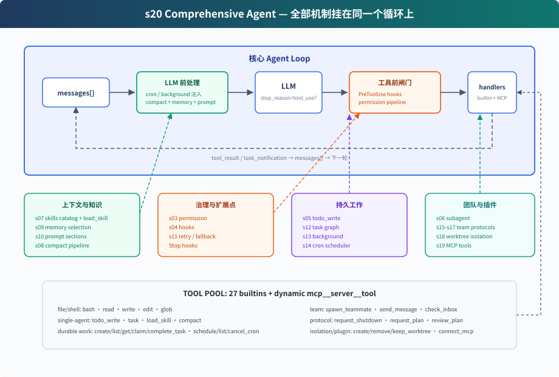

s20: Comprehensive Agent — 全部机制，归到一个循环
"机制很多，循环一个" — 工具、权限、记忆、任务、团队、插件都挂在同一个 while True 上。 Harness 层: 综合 — 把前 19 章的机制放回同一个可运行系统。
On this page
s01 → ... → s18 → s19 → s20
"机制很多，循环一个" — 工具、权限、记忆、任务、团队、插件都挂在同一个 while True 上。
Harness 层: 综合 — 把前 19 章的机制放回同一个可运行系统。
问题
前 19 章每章只加一个机制。这样适合学习，但真实 Agent 不会只带一个机制运行。
一个能长期工作的 coding agent 需要同时拥有：
- 工具分发和权限边界
- hooks 扩展点
- todo 计划和任务图
- 技能、记忆、系统 prompt 组装
- 压缩和错误恢复
- 后台任务和 cron 调度
- 团队、协议、自治认领
- worktree 隔离
- MCP 外部工具接入
难点不是把功能堆起来，而是看清楚它们都挂在循环的哪个位置。S20 就是终点章：把所有组件归位。
解决方案

S20 不是再发明一个新机制，而是把前面的教学组件合成一个完整 harness：
用户输入
→ UserPromptSubmit hooks
→ cron/background 通知注入
→ context compact
→ memory + skills + MCP 状态组装 system prompt
→ LLM
→ has tool_use block?
否 → Stop hooks → 返回
是 → PreToolUse hooks + permission
→ TOOL_HANDLERS / MCP handlers / background dispatch
→ PostToolUse hooks
→ tool_result / task_notification 回 messages
→ 下一轮
循环本身仍然是同一个结构：调用模型，检查响应里是否出现 tool_use block，执行工具，把结果追加回 messages。CC 源码里也不直接信任 stop_reason == "tool_use"，而是以实际出现的 tool_use block 作为是否继续工具轮的信号。变化的是循环周围的 harness 变完整了。
组件在循环中的位置
| 位置 | 组件 | 作用 |
|---|---|---|
| 用户输入前后 | UserPromptSubmit hooks |
记录、注入、审计用户输入 |
| LLM 前 | cron queue | 把定时触发的 prompt 注入 messages |
| LLM 前 | background notifications | 后台任务完成后以 <task_notification> 注入 |
| LLM 前 | compaction pipeline | 先压大输出，再裁历史，再压旧 tool_result，必要时摘要 |
| LLM 前 | memory / skills / MCP state | 组装 system prompt，让模型看到当前能力和长期上下文 |
| LLM 调用 | error recovery | 429/529 重试，max_tokens 升级，prompt too long 触发 reactive compact |
| 工具执行前 | PreToolUse hooks + permission |
拦截危险命令、写越界、破坏性 MCP 工具 |
| 工具分发 | assemble_tool_pool |
组装内置工具和 MCP 动态工具 |
| 工具执行时 | background dispatch | 慢 bash 操作放 daemon thread，主循环先返回占位结果 |
| 工具执行后 | PostToolUse hooks |
大输出告警、日志等后处理 |
| 返回循环 | tool_result | 每个 tool_use 对应一个 tool_result，再回到下一轮 |
| 本轮没有 tool_use / 停止时 | Stop hooks |
统计、清理、审计 |
code.py 包含什么
工具与分发
内置工具池包含 27 个工具：
bash, read_file, write_file, edit_file, glob
todo_write, task, load_skill, compact
create_task, list_tasks, get_task, claim_task, complete_task
schedule_cron, list_crons, cancel_cron
spawn_teammate, send_message, check_inbox
request_shutdown, request_plan, review_plan
create_worktree, remove_worktree, keep_worktree
connect_mcp
assemble_tool_pool() 每轮组装：
BUILTIN_TOOLS + connected MCP tools
BUILTIN_HANDLERS + mcp__server__tool handlers
所以 connect_mcp("docs") 后，下一轮工具池里会出现 mcp__docs__search。
权限和 hooks
权限不写死在工具执行行里，而是作为 PreToolUse hook：
blocked = trigger_hooks("PreToolUse", block)
if blocked:
results.append(tool_result(block.id, blocked))
continue
这样 permission、log、审计都可以挂在同一个 hook 点上。执行后再触发 PostToolUse。
计划与任务
S20 同时保留两层计划：
todo_write：当前会话内的轻量计划，保存在内存中- task graph：跨会话、可依赖、可认领的任务文件，写入
.tasks/task_*.json
前者帮助单个 Agent 不漂移；后者支撑团队协作。
子 agent 与团队
S20 有两种 delegation：
task：一次性 subagent。独立messages[]，中间过程丢弃，只返回最终摘要。spawn_teammate：持久队友线程。通过 MessageBus 收发消息，能 idle 轮询任务板并自动认领。
一次性 subagent 解决“上下文隔离”；持久队友解决“长期并行协作”。
记忆、技能和 prompt
assemble_system_prompt(context) 每轮组装：
- 身份和工具说明
- workspace
- skills catalog
.memory/MEMORY.md- 已连接 MCP server
技能只在 system prompt 里放目录。完整内容通过 load_skill(name) 按需加载。
压缩和恢复
LLM 前先跑压缩管线：
tool_result_budget → snip_compact → micro_compact → compact_history
调用模型时再包一层恢复：
- 429：指数退避重试
- 529：指数退避，连续失败可切 fallback model
max_tokens：先提高 max_tokens，再要求 continuation- prompt too long：reactive compact 后重试
后台和 cron
慢 bash 操作不会阻塞主循环：
should_run_background → start_background_task → placeholder tool_result
后台完成 → task_notification → 下一轮注入 messages
cron 调度器独立 daemon thread 每秒检查一次。CLI 会监听 cron_queue，命中后主动把 [Scheduled] ... 注入并运行一轮 Agent。
worktree 与 MCP
worktree 负责隔离目录：
create_worktree(name, task_id)创建独立分支和目录- task 的
worktree字段绑定目录 - 队友 claim 到带 worktree 的 task 后，bash/read/write 自动在对应目录下执行
MCP 负责外部能力：
connect_mcp(name)连接 mock serverassemble_tool_pool()把 MCP 工具组装进工具池- 工具名统一为
mcp__server__tool
相对 s19 的变化
| 组件 | s19 | s20 |
|---|---|---|
| 工具池 | 内置 + MCP | 内置 + MCP，补齐 s01-s18 的工具 |
| 权限 | 教学主体省略 | PreToolUse hook 中执行 |
| hooks | 省略 | UserPromptSubmit / PreToolUse / PostToolUse / Stop |
| todo | 省略 | todo_write + reminder |
| skill | 省略 | catalog in system prompt + load_skill |
| compact | 省略 | LLM 前压缩 + compact 工具 + reactive compact |
| error recovery | 简化 try/except | retry / max_tokens / prompt too long |
| background | 省略 | 慢操作后台线程 + task notification |
| cron | 省略 | daemon scheduler + durable jobs |
| multi-agent | 保留 | 保留；队友使用隔离目录下的基础工具 |
| worktree | 保留 | 保留 |
| MCP | 新增 | 保留，作为最终工具池的一部分 |
试一下
cd learn-claude-code
python s20_comprehensive/code.py
可以试：
Create a todo list for inspecting this repo, then list Python filesConnect to the docs MCP server and search for agent loopCreate two tasks, create worktrees for them, then spawn alice and bob. Ask them to submit plans before claiming tasks.remind me of the meeting in 3 minutes.Run npm install in the background and continue reading README.md
观察重点：
- 工具调用前是否经过 hooks/permission
connect_mcp后下一轮是否出现 MCP 工具- 慢操作是否返回 background placeholder
- 到点是不是自动提醒开会
- 队友是否提交 plan，并在 approval 前暂停
- plan 批准后，队友是否能认领任务
- worktree 绑定后，队友是否切到对应目录
结束亦是开始
从 s01 到 s20，代码表面越来越复杂，但核心始终没变：
while True:
response = LLM(messages, tools)
if not has_tool_use(response.content):
return
results = execute_tools(response.content)
messages.append(tool_results)
Claude Code 的复杂性不是“另一个 agent 大脑”，而是一个成熟 harness 的复杂性。模型负责判断和行动选择；harness 负责把环境、工具、权限、记忆、团队和外部能力组织好。
这就是全书的终点：机制很多，循环一个。